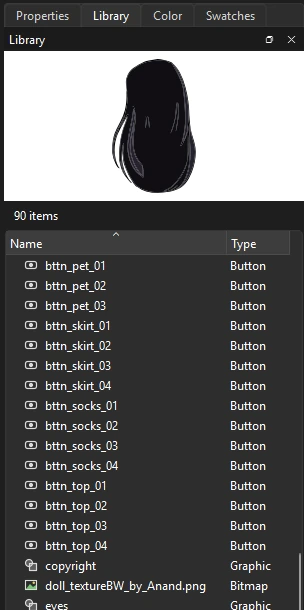

Symbols
The library
Every symbol, image and sound in a document lives in its library. The stage holds instances; the library holds the originals.

The Library is a tab beside Properties in the panel dock (, Ctrl+L). From top to bottom it shows:
- A preview of the selected item: a symbol's first frame, or the image. A symbol with more than one frame shows a Play button that runs it in the preview.
- The number of items in the library, and the library menu (☰), which has the same commands as right-clicking the selected item.
- A Search field. Type part of a name to show only the items that match, with the folders that hold them.
- The item list, with each item's name, type, use count, linkage and the date it was last changed or imported. Click a column heading to sort by it.
Item types are folders, graphics, movie clips, buttons, bitmaps, sounds, fonts and videos, each with its own icon. Use Count is how many times the document uses the item.
Use library items
- Drag a symbol or bitmap onto the stage to place an instance of it, centered where you drop it.
- Drag a sound onto the stage to attach it to the current frame. See Sound.
- Double-click a symbol to open it for editing, or a bitmap or sound to see its properties.
Organize the library
Right-click an item for:
- Rename
- Also F2. Every instance follows the new name automatically.
- Duplicate
- Makes a full copy of a symbol, named after the original with copy added.
- Linkage...
- Gives a symbol a class name, so scripts can create it by that name. Leave it empty for none. The name shows in the Linkage column.
- Generate Sprite Sheet...
- Lays the symbol's frames out on one image for a game. See Sprite sheets.
- Link to Master File...
- Keeps a symbol in step with the same symbol in another file, Once it is linked, the menu reads Change Master File... and adds Update from Master and Unlink from Master, and the library menu has Update All Linked Items. See Linked shared assets.
- Delete
- Removes the selected symbols, bitmaps and fonts (also Delete). If a symbol is still in use, Phoenix says how many times and asks before deleting it along with its instances. A bitmap that is still in use is kept. Text set in a deleted font symbol uses the font itself instead.
- New Symbol...
- Makes a new symbol in the selected folder. puts it there too.
- New Folder
- Adds a folder inside the folder you clicked.
- Expand All Folders, Collapse All Folders
- Opens or closes every folder at once.
- Select Unused Items
- Selects every symbol and bitmap nothing in the document uses, ready to delete. The item count reads how many it found.
Bitmap and sound properties
Right-click a bitmap for:
- Properties...
- Shows the bitmap with its source file, size and when it was imported. Allow smoothing draws it smoothly when scaled or turned. Compression (Photo or Lossless) and Quality are kept for publishing. Import... replaces the image with another file, keeping every use of it.
- Update
- Reads the selected bitmaps again from the files they were imported from, after you change them in another program.
- Edit With...
- Opens the bitmap in an image editor you choose (Phoenix remembers it). Each time you save in the editor, Phoenix takes the change, as a step you can undo.
A sound's Properties... show its format and length, with Play and Stop to hear it.
Folders and moving items
Drag items or folders onto a folder to move them into it, or onto empty space to move them to the top level. Moving or renaming a folder takes everything inside it along, and every symbol instance, bitmap fill and sound that uses those items is updated to match. If a name is already taken, Phoenix refuses the change and explains why in the status bar.
All library changes can be undone.
Keep a folder per character or prop, and name symbols by part (head, arm_L, mouth_O). A tidy library makes swapping symbols and finding parts in the Edit Symbols list much quicker.
Font symbols
A font symbol carries a font, or the characters of it you need, with the document, so dynamic and input text look the same wherever the movie plays, even where the font is not installed. Right-click the library and choose New Font...: name it, pick the font and its style, and tick the characters to embed (uppercase, lowercase, numerals, punctuation, basic Latin), adding any others in Also.
To set text in a font symbol, select the text and choose Use for Selected Text from the symbol's right-click menu. Font Properties... changes it later; renaming it keeps the text set in it.
Libraries of other documents
To use items from another document, choose (Ctrl+Shift+O) and pick an FLA, XFL or PHX file. Its library opens in a panel of its own, read-only. Then:
- Drag an item onto the stage to copy it into your document's library and place it.
- Right-click items and choose Copy to Document to bring them into your library without placing them.
Between two open documents, right-click items in one library and choose Copy, switch to the other document's tab, and choose Paste from its library's menu.
However they come, items arrive whole: a symbol brings the symbols, bitmaps and sounds it uses, and the folders they are in. When your library already has items of the same names, Phoenix asks how to resolve the conflict:
- Don't replace existing items
- Your items stay as they are, and what comes in uses them.
- Replace existing items
- Your items take the incoming contents, and everything that uses them shows the new ones.
- Keep both
- The incoming items get new names (Head copy), and what came with them uses those names.
Copying is a single step you can undo. To keep a symbol in step with the file it came from, link it to that file instead; see Linked shared assets.